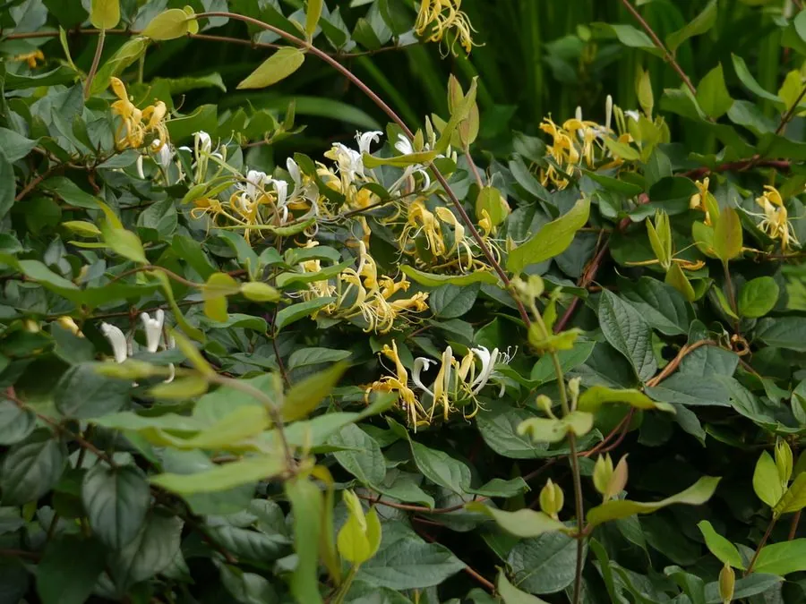

灌木与花木 · 植物界
金银花 Lonicera japonica

花初开洁白、次日转为金黄的缠绕藤本，黄白相间故得名“金银花”，花蕾是清热解毒的常用中药，也是庭院常见的藤本。
- 分类
- 门被子植物门纲木兰纲目川续断目科忍冬科属忍冬属
- 栖息环境
- 海拔 1500 米以下的山坡灌丛、林缘与路旁，喜光耐寒，适应性强
- 地理分布
- 原产中国、朝鲜半岛及日本，中国南北各地广泛分布
- 保护级别
- 暂无评估；中国未列入国家重点保护野生植物名录
物种志
金银花为常绿或半常绿缠绕藤本，茎长达 9 m，幼枝暗红色、密被短柔毛；叶片对生，卵形至椭圆形，全缘，两面被毛。花期 4–6 月，花成对生于叶腋，花冠唇形，长 3–5 cm，初开白色、次日转为金黄色，黄白相间，故得名“金银花”，香气清雅；浆果球形，成熟时黑色。
金银花原产中国、朝鲜半岛及日本，中国南北各地常见，喜光、耐寒、耐旱，对土壤要求不严，在山坡、灌丛与路旁都能生长。花蕾未开放时采收干燥，即为中药“金银花”，能清热解毒、疏散风热，是银翘解毒片等中成药的原料；藤茎入药称“忍冬藤”。金银花适应性强、攀爬迅速，既是药用植物，也是庭院篱垣与棚架的绿化藤本。
形态与习性
- 藤长可达 9 m，幼枝暗红色
- 花期4–6 月，花初白后转金黄
- 果期8–10 月，浆果黑色
- 光照喜光，也耐半阴
- 水分耐旱，怕积水
- 土壤适应性强，耐瘠薄
- 主要用途花蕾入药、庭院篱架绿化、藤茎入药
趣味知识
- 金银花的花初开洁白，第二天转为金黄，因此同一株上常金银两色并存。
- 金银花的花蕾是中药“金银花”，能清热解毒，是银翘解毒片的主要原料。
- 金银花的藤茎入药称“忍冬藤”，与花蕾的药效略有不同。
- 金银花耐寒耐旱，在山坡、路旁都能生长，适应力极强。